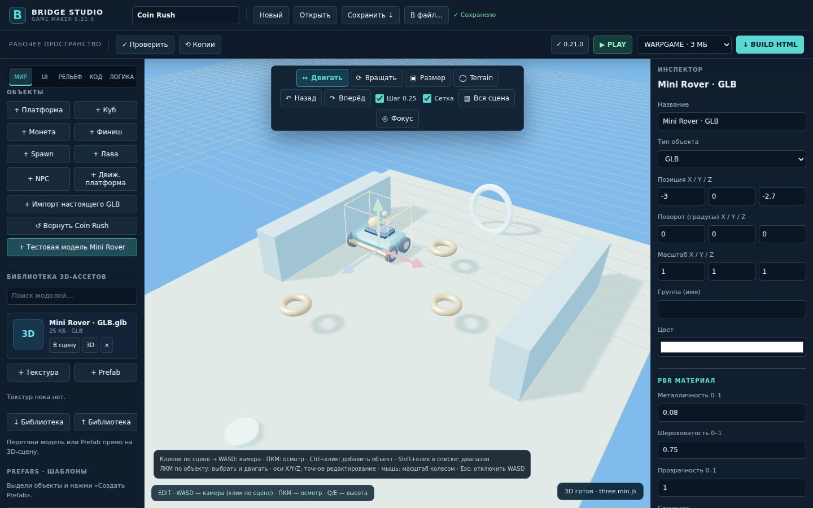

Build 3D games.
Continue the editor.
Bridge Studio is an experimental Windows-oriented 3D game editor built with Three.js r128 and WebGL. Its source code is publicly available for developers who want to learn, fork or take over maintenance.

Latest officially signed update: v0.22.2. The repository is experimental and is not a finished replacement for Roblox Studio or Unity.
Project capabilities
Build & Play
3D viewport, editor tools, terrain sculpting and painting, scenes and projects saved as .rwscene.
Gameplay & Assets
GLB importer, materials, prefabs, quests, visual gameplay logic and local inventory/progression.
HTML Export
Single-file WARPGAME export under a strict 3,000,000-byte game budget. The editor itself has no such limit.
Who will continue it?
The original author paused development on November 4, 2026. Help is welcome with glTF skeletal animation, quality original 3D assets, visual polish, gameplay, modular architecture and Windows QA. No future release or review schedule is promised.
Read the contribution guide · Read the technical handoff
updates/ files remain available for legacy clients.